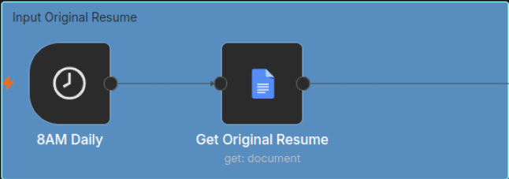
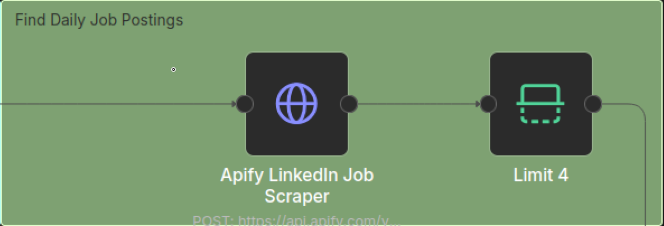
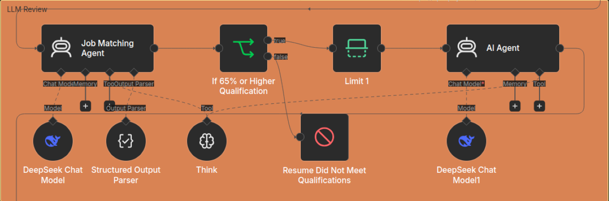
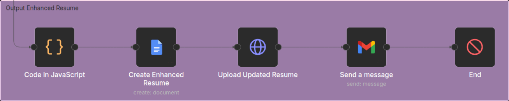

Project Overview
This project is an automated, end-to-end resume tailoring system built on a self-hosted n8n platform. It integrates job board APIs, web scrapers, and Large Language Models (LLMs) to automatically ingest, evaluate, and customize your resumes for high-volume job applications.
Section 1: Input Original Resume
We kick off the pipeline by setting up an automated trigger that fires whenever a condition is met. The workflow will then fetch your base resume (using your API key) directly from Google Drive, Google Docs, GitHub, or your preferred cloud storage provider.

Section 2: Find Daily Job Postings
The workflow triggers an Apify Actor through the Apify API to scrape job postings across target job boards, with a configurable batch limiter per execution for storage and scrapping of positions.

Section 3: LLM Review
An LLM API of your choice then evaluates the scraped job listings against your original resume to calculate a match score. Postings that exceed the match threshold are automatically rewritten with keywords aligned to the job description.

Section 4: Output Enhanced Resume
The tailored content is then compiled into an ATS-friendly JavaScript layout, and then converted into a high-quality PDF file, which is automatically saved to your connected cloud storage API (e.g., Google Drive, Google Docs, GitHub, or Gmail).
